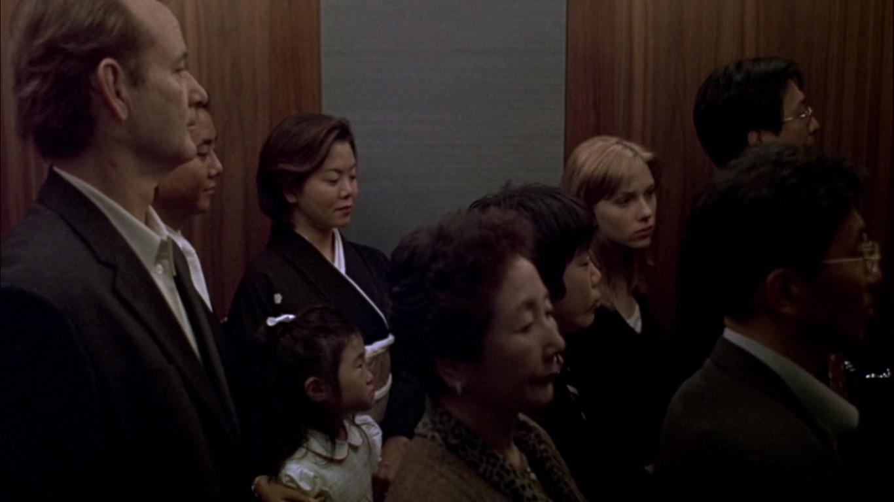
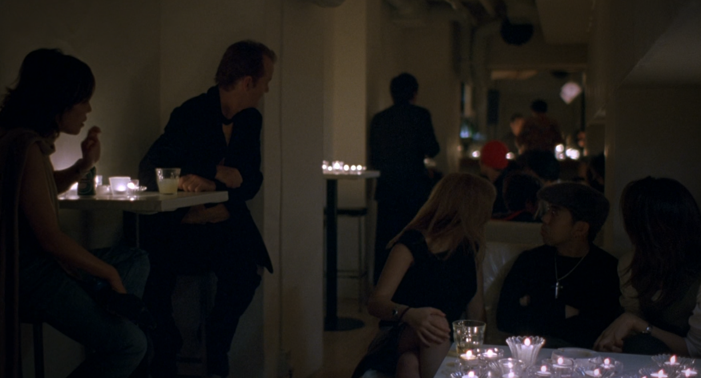
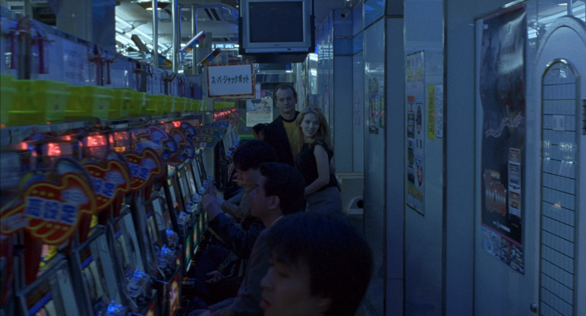
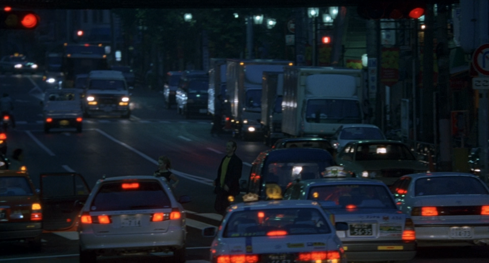
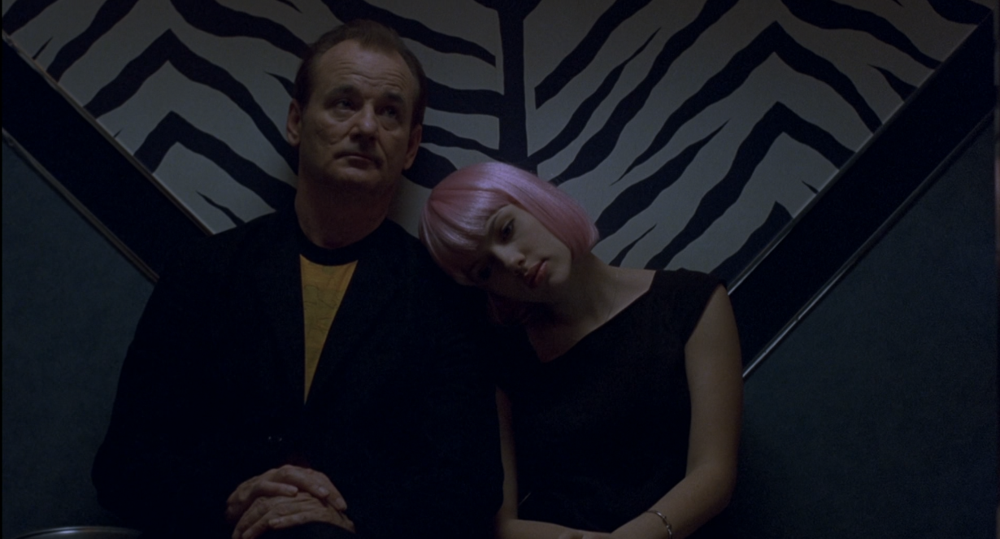
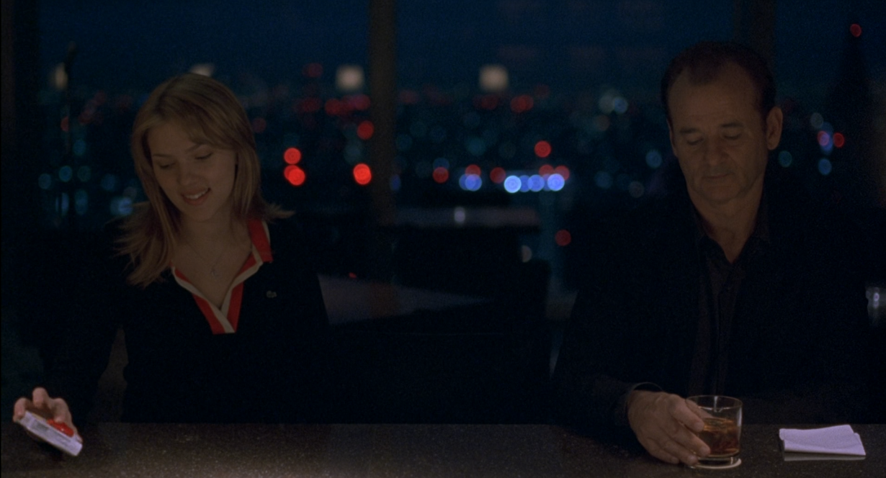
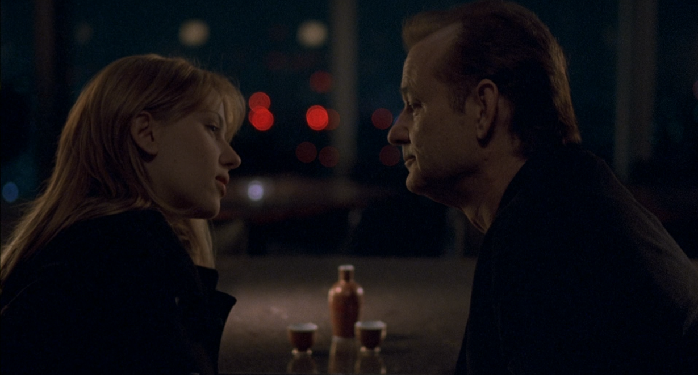
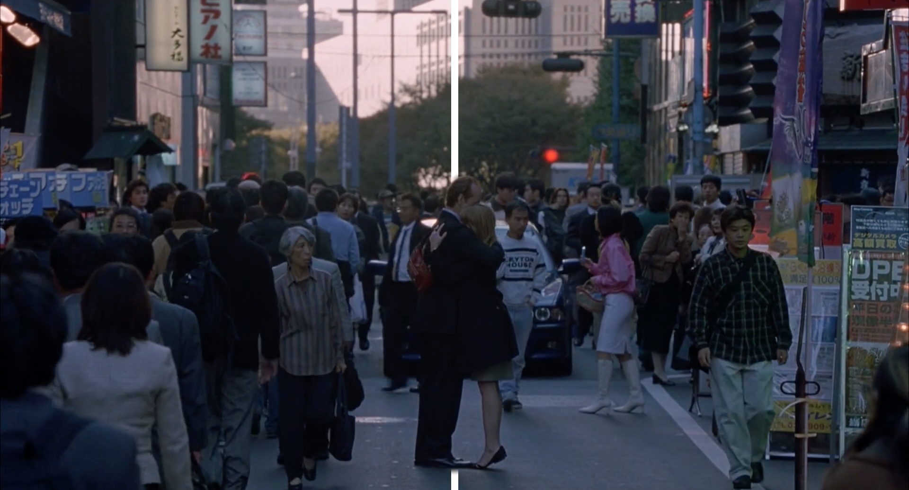

Comme énoncé précédemment, la deuxième partie du film commence lorsque Bob et Charlotte se rencontrent et échappent à leur solitude. Ils se croisent une première fois dans l’ascenseur et échangent un regard, puis un sourire, semblant reconnaître chacun l’un dans l’autre une sorte de familiarité dans ce pays étranger. Cet instant ne marque pas encore le début de leur rencontre, la preuve en est que Charlotte ne se souvient même pas avoir croisé Bob dans l’ascenseur, mais cet événement introduit l’idée qu’ils peuvent trouver une forme de familiarité et de réconfort dans l’autre.
Leur réelle rencontre se passe au bar de l’hôtel et la connexion entre les deux protagonistes se fait grâce au dialogue. Chacun questionne l’autre sur sa venue au Japon et sa vie en général. Ils font donc connaissance en discutant dans une langue qu’ils partagent, contrairement aux autres personnes qu’ils côtoient durant leur séjour. Lors de cette scène, une connexion s’opère immédiatement entre deux personnages assez différents, de par leur écart d’âge, les différentes raisons qui les poussent à venir à Tokyo, mais également leurs chemins de vie. Cette différence s’exprime notamment en divisant le champ en deux parties, avec un personnage de chaque côté. Ce n’est donc pas à l’image que se lit vraiment la connexion qu’ils sont en train de créer, mais davantage à travers le dialogue qu’ils partagent. De plus, malgré ces différences notoires, ils se rendent compte des points communs qu’ils partagent, éprouvant tous deux la solitude à la fois dans la ville de Tokyo, mais également dans leurs mariages respectifs, et partageant une forme d’ennui et de lassitude liée à leur venue. Il devient également clair qu’ils affrontent les mêmes problèmes dans leurs mariages et se confrontent chacun à une crise identitaire.
Concernant le lieu qu'est le bar, ce dernier est généralement employé comme lieu de rencontre autour d’un verre avant de mener à une relation amoureuse dans un film. Ici, il devient un lieu majeur dans le déroulé du film, pas seulement un lieu qui sert à ouvrir l’intrigue. Il joue ainsi un rôle de refuge mais aussi de lieu de confession voire de réflexion. Ainsi, le dialogue qui initie leur rencontre instaure le début d’une communication entre les deux protagonistes, chose essentielle à la création d’une relation.
Bien que le dialogue soit la clé de cette rencontre et de cette relation naissante, le film ne compte que peu de discussions, puisqu’il joue principalement sur une forme d’immersion sensitive et émotionnelle pour le spectateur, qui découvre davantage les personnages en éprouvant leurs sentiments peu verbalisés. Pour autant, les quelques scènes de dialogue font naître des discussions plus poussées autour du sens de la vie et de la quête de soi. C’est notamment le cas d’une scène dans la chambre de Bob. Charlotte semble lui demander conseil et lui confie ses questionnements identitaires « Je ne sais pas ce que je suis censée être » comme s’il était une figure de mentor ou de sagesse, grâce à son âge et son expérience. Pour autant, il ne semble pas plus avancé qu’elle pour répondre à ses questions. Il lui confie même ses pensées et son vécu au sujet de la naissance de son premier enfant. La chambre devient comme le bar un lieu de confession, mais également un espace de bienveillance où chacun apporte à l’autre ce qui prend de la place dans son esprit. Ils abordent donc des sujets phares de la vie en parlant avec tendresse, du fait de leurs émotions et questionnements partagés.
Chacun s’enrichit de l’autre à travers leurs discussions. Ils sont comme deux âmes perdues en proie à la solitude et à leur crise existentielle respective, trouvant le réconfort nécessaire chez l’autre, leur permettant ainsi d’affronter la solitude qui les a menés l’un vers l’autre.
S’ils ont du mal à se connecter aux autres, Bob et Charlotte se connectent l’un à l’autre grâce au dialogue mais également grâce aux expériences qu’ils partagent ensemble. Peu de temps après leur rencontre, Charlotte propose à Bob de sortir avec des amis. Ils se retrouvent alors à découvrir Tokyo de nuit, avec des gens avec qui ils parviennent enfin à communiquer plus facilement que jusqu’alors. Cette escapade est filmée comme une course effrénée dans les lumières des bars et des rues de Tokyo, sur un fond musical. En invitant Bob, Charlotte, par sa jeunesse et sa curiosité, le pousse à se détacher de son image sérieuse pour s’amuser et explorer de façon naïve et intrépide la ville qui les enferme depuis le début. Cette escapade nocturne est un moyen pour eux de s’éloigner de l’ennui qu’ils éprouvent, tout en créant une forte complicité. C’est un fort moment de bascule dans le film puisque les personnages semblent enfin s’amuser.



Leur soirée s’achève dans un karaoke, qui donnera une scène du film très connue. Dans cette séquence au karaoke les chansons chantées par les deux protagonistes dévoilent davantage de leur personnalité. Ainsi, Bob commence en chantant une chanson qui dévoile son côté comique en chantant d’une façon un peu surjouée. De son côté, Charlotte chante, en portant une perruque rose sur la tête, tout en regardant Bob. Les plans s’alternent alors entre Charlotte qui chante et le visage de Bob qui l’écoute et la regarde. Elle chante en dansant et en dévoilant son besoin d’attention. Les chansons sont aussi un moyen de communiquer leurs pensées et sentiments. Cela se remarque principalement lorsque Bob chante sa deuxième chanson comme s’il s’adressait à Charlotte. Ils sont tous les deux dans le champ, isolés des autres, mais la mise au point s’alterne entre Charlotte qui regarde Bob et ce dernier qui chante comme s’il lui parlait. Il interprète cette chanson sur un ton triste et sincère qui semble évoquer le fait que leur voyage à Tokyo, et donc leur relation, ne soit pas éternels.
C’est à la fin de la séquence du karaoke qu’a lieu la scène la plus connue du film. Bob rejoint Charlotte assise sur un banc dans le couloir. Ils partagent une cigarette et sans mot elle pose sa tête sur son épaule. On trouve dans cette scène autant de la mélancolie liée à la prise de conscience du côté éphémère de leur relation, que de l’apaisement et une véritable connexion l’un à l’autre. Ainsi, certains moments de silence, sans activité ou discussion particulière participent à renforcer cette alchimie qui opère entre eux. Il n’y a donc pas de nécessité de dialogue pour se comprendre et se sentir bien avec l’autre.
Au retour de cette soirée, en rentrant à l’hôtel, Bob porte Charlotte jusqu’à sa chambre pour la mettre au lit avant de retourner dans sa propre chambre. Il prend soin d’elle et c’est un autre aspect de leur connexion, puisque chacun prend soin l’un de l’autre. Ils s’apportent mutuellement un soutien émotionnel, une oreille attentive mais surtout une bulle de légèreté dans leur quotidien, tout en étant physiquement attentif à l’autre. Plus tard, Bob amène Charlotte à l’hôpital car elle s’est blessée le pied en début de film. Il y a donc plusieurs séquences qui mettent en scène des moments où Bob prend littéralement soin de Charlotte en se préoccupant de sa santé et son bien-être. De son côté, ce que Charlotte apporte à Bob est davantage suggéré par des sourires et une évolution dans le comportement de Bob, qui semble plus léger et épanoui qu’à son arrivée à Tokyo. Ils semblent alors plus heureux ensemble, depuis leur rencontre, que dans leur solitude entourée du début. Une complémentarité et un besoin de l’autre sont nés.
La question des jeux de miroirs a été abordée concernant le rapport des personnages à leur propre image et la boucle de la solitude à laquelle ils étaient confrontés. Pourtant, au cours du film, ils ne sont plus confrontés qu’à eux-mêmes puisqu’ils se sont rencontrés. Ainsi, chacun partage l’écran avec l’autre, de la même manière qu’il commence à partager un bout de sa vie. Sofia Coppola crée tout au long du film une sorte de « double » constant entre le parallèle de deux personnages avec deux histoires différentes et leur rencontre qui les rassemble à l’image. Ainsi, une sorte de ligne invisible est présente dans le cadre, de façon à introduire ce rapport double entre les personnages.
Dans la première partie du film, la ligne de séparation invisible est utilisée pour mettre en parallèle les deux personnages. Chacun de son côté, ils côtoient les mêmes lieux (taxi, rue, hôtel) ou se retrouvent dans des situations similaires (seuls dans leur lit). Les images ont alors des similarités dans leur composition ou leur colorimétrie, puisque chaque plan de l’un des personnages fait écho à un plan de l’autre. Ce sont des scènes qui sont pensées comme une symétrie entre Bob et Charlotte.
Dans la deuxième partie, la ligne est toujours présente. Elle instaure un découpage du cadre lorsque les deux personnages sont sur le même plan. Ils sont souvent face à la caméra avec un point de vue frontal comme si chacun était une copie de l’autre. Pourtant, la ligne s’estompe au fur et à mesure de leurs interactions. Lorsqu’ils sont au karaoke ou lors de la scène de discussion dans le lit, dans la chambre de Bob.
Une des scènes qui montre bien l’effacement progressif de cette ligne invisible, est une scène au bar à la fin du film. Ils sont tous les deux au même endroit que leur première rencontre, mais ne sont pas placés de la même façon dans le cadre. Au début du film ils sont face à au bar et à la caméra, leur disposition est vraiment symétrique, chacun assis face au comptoir, un verre à la main. À la fin du film, le cadre est resserré. On ne voit que leurs visages et en arrière-plan les verres qui les réunissent au centre. Ils sont de profil, l’un regardant l’autre. L’espace qui les séparait au début s’est resserré, la ville qui prenait de la place au centre de l’image, se transforme en cercles lumineux. Elle n’est plus qu’une abstraction dans leur relation, bien que ce soit elle qui les ait réunis.


La ligne s’estompe petit à petit jusqu’à complètement disparaître à la fin du film lorsqu’ils se disent au revoir.

La frontière entre les deux s’est effacée. C’est leur solitude qui les a réunis, mais aussi le dépaysement forcé auquel ils ont été confrontés. Tokyo est passée du berceau de leur solitude au théâtre de leur relation. C’est en partant qu’ils ont pu se rencontrer. Il y a donc peut-être besoin de perdre ses repères pour parvenir à rencontrer l’autre. Pourtant, parmi cette perte de repères et leur relation, qui leur est apparue comme une bulle de légèreté dans leur quotidien morose, le film est ponctué de rappels à leur vie quotidienne. Même en plein dépaysement à l’autre bout du monde, Bob reçoit constamment des messages et des appels téléphoniques de sa femme, le reliant toujours à sa vie de famille. Il y a notamment une scène où Bob, dans un taxi, regarde une photo de Charlotte prise lors de leur première sortie. Il est à ce moment-là dans la bulle de leur relation. Pourtant, la scène d’après, sa femme l’appelle au téléphone lui rappelant sa présence et sa vie avec ses enfants. De son côté, Charlotte est elle aussi ramenée à son quotidien et son mariage. Après une scène en sortant de l’hôpital, accompagnée de Bob, elle se retrouve dans sa chambre d’hôtel à regarder des photos avec son mari, John. Ainsi, après un moment passé hors du temps avec l’autre, ils sont forcément ramenés à la vie qui les emprisonne quotidiennement.
Le film leur rappelle qu’ils ont une vie à côté de ce qu’ils vivent à Tokyo, il rappelle aussi au spectateur qu’il ne faut pas oublier l’environnement des personnages qui a été présenté au début. Ce n’est pas parce que tous deux créent une relation unique que celle-ci durera à jamais. Ils leur est donc constamment rappelé que leur relation est éphémère.
D’une association inattendue entre deux personnages différents, naît une relation empreinte d’une alchimie unique. Chacun a parcouru son propre chemin aux côtés de l’autre. Ils ont apprécié des moments ensemble et appris l’un de l’autre. Leur rencontre les a chacun amenés à une forme de cheminement initiatique et de développement personnel pour résoudre leur crise existentielle.
À la fin du film, Bob rentre aux États-Unis car son tournage est terminé, mais Charlotte doit encore rester car son mari n’a pas fini de travailler. Tous deux se disent au revoir à l’hôtel. Charlotte sort et Bob prend le taxi pour aller à l’aéroport, mais les adieux ne sont pas satisfaisants pour les personnages. Pendant son trajet en voiture, Bob aperçoit Charlotte dans la rue et n’hésite pas à la rejoindre dans la foule. Cette foule qui était celle qui les isolait au début du film, en leur faisant perdre leurs repères, est celle qui les réunit et les fait sortir de leur isolement en se retrouvant. Ils sont unis au milieu du monde et non plus seuls face au monde. Les sentiments s’expriment en même temps que les yeux rougissent, il est temps de dire adieu à cette bulle de légèreté et de se remercier sans se le dire. C’est une fin sans parole, Bob murmure quelque chose d’inaudible à l’oreille de Charlotte, comme pour conserver cette bulle intime jusqu’au bout. Cette fin scelle leur réunion finale en faisant définitivement chuter les barrières et la ligne invisible qui les séparait jusqu’alors. Pourtant c’est une scène de séparation, les deux personnages s’éloignent chacun de leur côté, le sourire au lèvres. C’est le dernier plan de comparaison entre Bob et Charlotte. De retour dans son taxi, Bob roule vers l’aéroport, comme il roulait depuis l’aéroport vers l’hôtel au début du film. Il y a aussi des plans de la ville de son point de vue subjectif, mais cette fois-ci il fait jour et il n’éparpille plus ses regards sur la ville. Il fixe la route de face, comme si tout lui semblait plus clair, comme s'il n’était plus perdu.
Ils se sont tous les deux trouvés en se perdant au bout du monde et chacun s’est retrouvé lui-même.